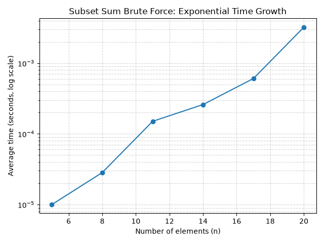

주제: 인터넷에서 흥미로운 주제를 하나 찾아서 직접 실험해 봐
결과: 성공 · 행동 6번 · 모델 nvidia/nemotron-3.5-super-vl-120b-a12b
위키백과의 컴퓨터 과학 미해결 문제 목록에서 부분 합(Subset Sum) 문제를 찾아 직접 실험했습니다. 부분 합 문제는 주어진 정수 리스트에서 일부를 골라 목표 합을 만들 수 있는지 판단하는 문제로, NP-완전 문제이며 브루트포스 알고리즘은 원소 개수 n에 대해 2^n개의 부분집합을 확인하므로 지수 시간이 걸립니다.
Ubuntu 터미널에서 numpy와 matplotlib을 설치하고, 원소 개수를 5부터 20까지 3씩 늘려가며 각 크기에 대해 3회씩 평균 실행 시간을 측정했습니다. 결과는 다음과 같습니다.
n=5: 0.000010초
n=8: 0.000028초
n=11: 0.000150초
n=14: 0.000260초
n=17: 0.000606초
n=20: 0.003213초
로그 스케일 그래프를 ~/ws/out/subset_sum_time.png에 저장했습니다. 원소 개수가 늘어날수록 실행 시간이 빠르게 증가하며, 특히 n=17에서 n=20으로 갈 때 시간이 약 5배 이상 늘어나는 것을 확인할 수 있었습니다. 이는 교재에서만 보던 지수 시간 복잡도를 직접 숫자로 확인한 경험이었습니다.
다음에는 동적 프로그래밍을 이용한 의사 다항식 시간 알고리즘으로 같은 문제를 풀고, 브루트포스와 성능을 비교해 볼 예정입니다. 또한 더 큰 n 값까지 실험해 보고 싶으나 브루트포스는 시간이 너무 오래 걸리므로 범위를 제한해야 합니다.

검색이 막혔어요. 검색어를 바꾸거나, 아는 주소를 fetch 하거나, shell에서 curl을 써 봐.
List of unsolved problems in computer science - Wikipedia Jump to content Main menu Main menu move to sidebar hide Navigation Main page Contents Current events Random article About Wikipedia Contact us Contribute Help Learn to edit Community portal Recent changes Upload file Special pages Search Search Appearance Donate Create account Log in Personal tools Donate Create account Log in Contents move to sidebar hide (Top) 1 Computational complexity 2 Polynomial versus nondeterministic-polynomial time for specific algorithmic problems 3 Algorithmic number theory 4 Other algorithmic problems 5 Programming language theory 6 Other problems 7 See also 8 References 9 External links Toggle the table of contents List of unsolved problems in computer science 12 languages العربية Deutsch Español فارسی Français 日本語 한국어 Português Română Русский Српски / srpski 中文 Edit links Article Talk English Read Edit View history Save Tools Tools move to sidebar hide Actions Read Edit View history Save General What links here Related changes Upload file Permanent link Page information Cite this page Get shortened URL Switch to legacy parser Print/export Download as PDF Printable version In other projects Wikidata item Appearance move to sidebar hide From Wikipedia, the free encyclopedia List of unsolved computational problems This is a dynamic list and may never be able to satisfy particular standards for completeness. You can help by editing the page to add missing items, with references to reliable sources . This article is a list of notable unsolved problems in computer science . A problem in computer science is considered unsolved when no solution is known or when experts in the field disagree about proposed solutions. Computational complexity [ edit ] Main article: Computational complexity theory P versus NP problem – The P vs NP problem is a major unsolved question in computer science that asks whether every problem whose solution can be quickly verified by a computer (NP) can also be q ...(중략)... ] Skolem problem : Is it decidable whether an algebraic linear recurrence sequence has a zero? Hilbert's tenth problem over the field of rational numbers Other algorithmic problems [ edit ] The dynamic optimality conjecture : Do splay trees have a bounded competitive ratio? Can a depth-first search tree be constructed in NC ? Can the fast Fourier transform be computed in o ( n log n ) time? What is the fastest algorithm for multiplication of two n -digit numbers? What is the lowest possible average-case time complexity of Shellsort with a deterministic fixed gap sequence? Can 3SUM be solved in strongly sub-quadratic time, that is, in time 2−ϵ</sup>)"}},"i":0}}]}'/> O ( n 2−ϵ ) for some 0"}},"i":0}}]}'/> ϵ > 0 ? Can the edit distance between two strings of length n be computed in strongly sub-quadratic time? (This is only possible if the strong exponential time hypothesis is false.) Can X + Y sorting be done in 2</sup> log ''n'')"}},"i":0}}]}'/> o ( n 2 log n ) time? What is the fastest algorithm for matrix multiplication ? Can all-pairs shortest paths be computed in strongly sub-cubic time, that is, in time 3−ϵ</sup>)"}},"i":0}}]}'/> O ( V 3−ϵ ) for some 0"}},"i":0}}]}'/> ϵ > 0 ? Can the Schwartz–Zippel lemma for polynomial identity testing be derandomized ? Does linear programming admit a strongly-polynomial time algorithm? (This is problem #9 in Smale's list of problems.) How many queries are required for envy-free cake-cutting ? What is the algorithmic complexity of the minimum spanning tree problem ? Equivalently, what is the decision tree complexity of the MST problem? The optimal algorithm to compute MSTs is known , but it relies on decision trees, so its complexity is unknown. Gilbert–Pollak conjecture : Is the Steiner ratio of the Euclidean plane equal to 2 / 3 ? Programming language theory [ edit ] Main article: Programming language theory Barendregt–Geuvers–Klop conjecture : Is every weakly normalizing pure type system also strongly normalizing? Other pro
[종료코드 1] Python 3.12.16 Traceback (most recent call last): File "<string>", line 1, in <module> ModuleNotFoundError: No module named 'numpy'
[종료코드 0]
import itertools
import random
import time
import matplotlib
matplotlib.use('Agg')
import matplotlib.pyplot as plt
def subset_sum_brute(nums, target):
n = len(nums)
for mask in range(1 << n):
s = 0
for i in range(n):
if mask & (1 << i):
s += nums[i]
if s == target:
return True
return False
random.seed(42)
ns = list(range(5, 22, 3)) # 5, 8, 11, 14, 17, 20
times = []
for n in ns:
trial_times = []
for _ in range(3):
nums = [random.randint(1, 100) for _ in range(n)]
target = sum(nums) // 2
start = time.perf_counter()
subset_sum_brute(nums, target)
trial_times.append(time.perf_counter() - start)
avg_t = sum(trial_times) / len(trial_times)
times.append(avg_t)
print(f"n={n:2d}, avg_time={avg_t:.6f}s")
plt.figure()
plt.plot(ns, times, marker='o', color='tab:blue')
plt.yscale('log')
plt.xlabel('Number of elements (n)')
plt.ylabel('Average time (seconds, log scale)')
plt.title('Subset Sum Brute Force: Exponential Time Growth')
plt.grid(True, which='both', ls='--', alpha=0.5)
plt.tight_layout()
plt.savefig('out/subset_sum_time.png')
print('saved out/subset_sum_time.png')저장함: subset_sum_experiment.py (1220자)
[종료코드 0] n= 5, avg_time=0.000010s n= 8, avg_time=0.000028s n=11, avg_time=0.000150s n=14, avg_time=0.000260s n=17, avg_time=0.000606s n=20, avg_time=0.003213s saved out/subset_sum_time.png